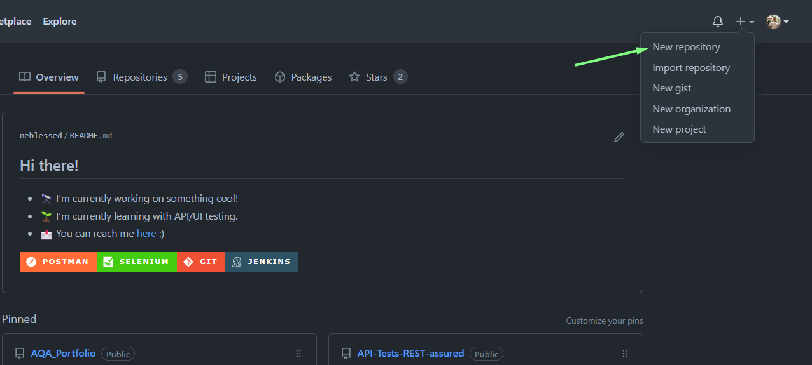
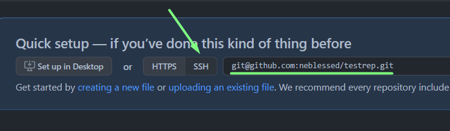
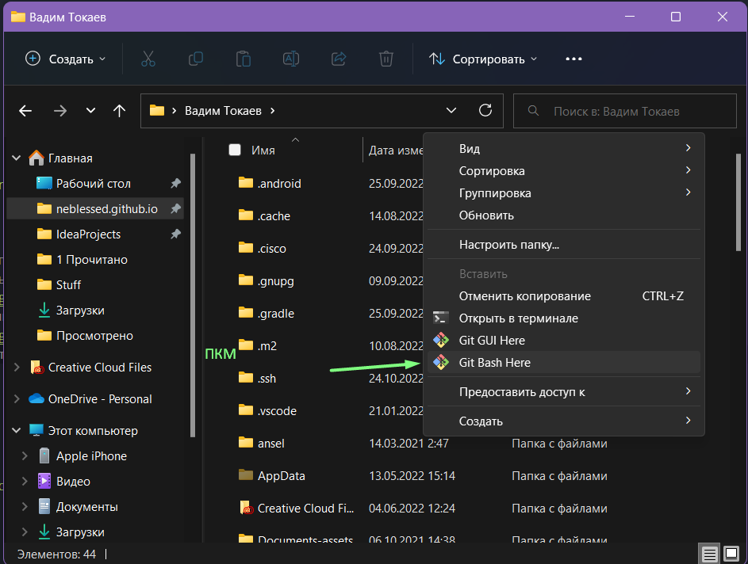
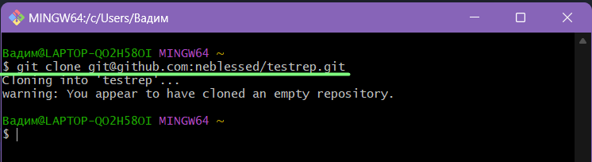
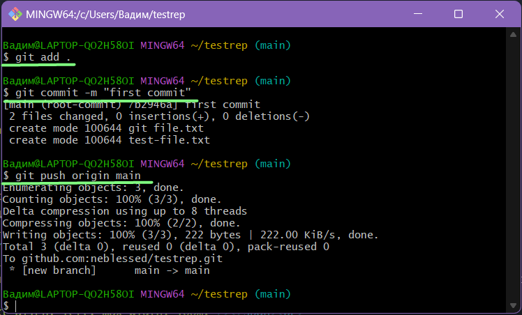
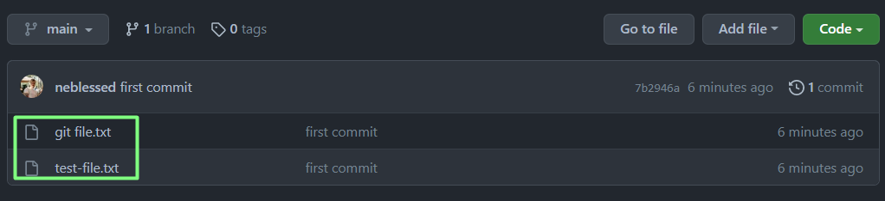
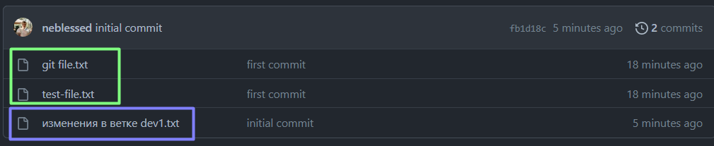

GIT - Контроллим версии 🏗️
Покажу пример создания локального репозитория и то, как с ним можно работать через Git Bash.
Первым делом я захожу на свой профиль в GitHub и создаю новый репозиторий:

👉🏼 После создания репозитория копирую его SSH:

Следующий шаг
Cклонировать этот репозиторий себе на компуктер. Для этого я открываю папку, в которой мне нужно хранить локальный репозиторий:
1. Первая команда - git clone shh-link.
Наш репозиторий успешно создан. Появилась папка (её название соответстует названию репозитория на github): 
Далее я закрываю консоль, и жму ПКМ по папке с репозиторием который мы создали > Git Bash Here.
Наша следующая цель - залить какие-нибудь файлы в master-ветку, а так же создать новый бранч.
📃 Порядок команд:
Заливаем файлы в master - $ git add . затем $ git commit -m "комментарий", далее $ git push origin main:

Проверяю свой репозиторий на github и вижу, что мои изменения применились. Файлы успешно добавлены:

🏗️ Создадим новую ветку, попробуем загрузить изменения с неё:
Для этого мне понадобятся команды $ git branch название ветки, $ git commit, а так же $ git push , $ git merge и $ git checkout
Пояснения команд:
1. git branch название ветки - этой командой мы создаём новую ветку
2. git checkout наша новая ветка - этой командой мы переходим в эту ветку
3. git add . - показываем гиту новые файлы в папке
4. git commit -m "комментарий" - коммитим найденные файлы
5. git push наша ветка - пушим изменения в нужную ветку
6. git checkout main - переходим в главную ветку
7. git merge та ветка, с которой только что работали - заливаем изменения в main
Само собой, я добавляю в папки некоторые файлы, чтобы наглядно показать изменения:

✅ Ну и небольшая шпаргалка всего пути:
1. Создать репозиторий на github, скопировать SSH-ссылку
2. Перейти в нужную папку на ПК > ПКМ > Git Bash Here
3. $git clone SSH-ссылка
4. Вносим файлы в папку, которая создалась на ПК после git clone
5. $git add . (именно с точкой, это обязательно)
6. $git commit -m "комментарий"
7. $git push origin main
Создание новой ветки:
8. $git branch dev1 , где dev1 - название ветки
9. $git checkout dev1 (переход с main в dev1 ветку)
10. Вносим новые файлы в папку
11. $git add .
12. $git commit -m "комментарий"
13. $git push origin dev1
14. $git checkout main
15. $git merge dev1
16. $git push origin main